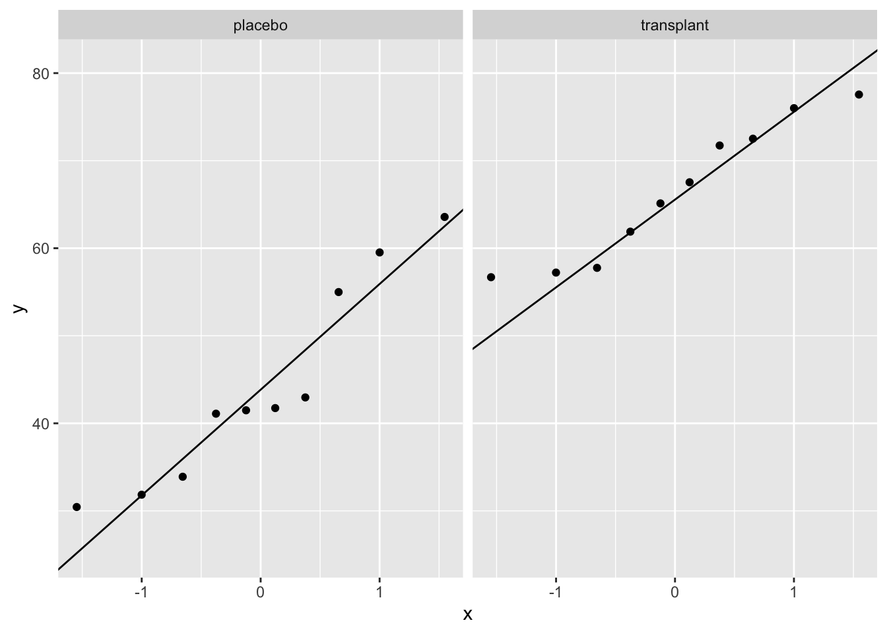

Code
# Load the libraries
library(tidyverse)statOmics, Ghent University (https://statomics.github.io)
Smelly armpits are not caused by sweat, itself. The smell is caused by specific micro-organisms belonging to the group of Corynebacterium spp. that metabolise sweat. Another group of abundant bacteria are the Staphylococcus spp., these bacteria do not metabolise sweat in smelly compounds.
The CMET-group at Ghent University does research to on transplanting the armpit microbiome to save people with smelly armpits.
Proposed Therapy:
Experiment:
The overarching goal of this research was to assess if the relative abundance Staphylococcus spp. in the microbiome of the armpit is affected by transplanting the microbiome. To this end the researchers randomized patients to two treatment: A treatment with antibiotics only and a treatment with antibiotics and a microbial transplant.
In the tutorial on hypotheses testing we will use a formal statistical test to generalize the results from the sample to that of the population.
# Load the libraries
library(tidyverse)Import the data
ap <- read_csv("https://raw.githubusercontent.com/statOmics/PSLSData/main/armpit.csv")Rows: 20 Columns: 2
── Column specification ────────────────────────────────────────────────────────
Delimiter: ","
chr (1): trt
dbl (1): rel
ℹ Use `spec()` to retrieve the full column specification for this data.
ℹ Specify the column types or set `show_col_types = FALSE` to quiet this message.glimpse(ap)Rows: 20
Columns: 2
$ trt <chr> "placebo", "placebo", "placebo", "placebo", "placebo", "placebo", …
$ rel <dbl> 54.99208, 31.84466, 41.09948, 59.52064, 63.57341, 41.48649, 30.440…A crucial first step in a data analysis is to visualize and to explore the raw data.
ap |>
ggplot(aes(x = trt, y = rel, fill = trt)) +
geom_boxplot(outlier.shape = NA) +
geom_point(position = "jitter") +
ylab("relative abundance (%)") +
xlab("treatment group") +
stat_summary(
fun = mean, geom = "point",
shape = 5, size = 3, color = "black",
)
We clearly see that, on average, the subjects who had a microbial transplant have a higher relative abundance of Staphylococcus spp. But is this difference statistically significant so that we can generalized what we observe in the sample to the population?
We can test this with an unpaired, two-sample t-test, which falsifies the null hypothesis that there is on average no difference in relative abundance of Staphylococcus in the armpit microbiome between the transplant and the placebo group against the alternative hypothesis that there is a difference in average abundance of Staphyloccocus in the armpit microbiome between the transplant and placebo treatment.
But, before we can start the analysis, we must check if all assumptions to perform a t-test are met.
The observations are independent. This has to be guaranteed by the design.
The data (rel) are normally distributed in each of the groups
The variability within both groups is similar.
To check the normality assumption, we will use QQ plots.
ap |>
ggplot(aes(sample = rel)) +
geom_qq() +
geom_qq_line() +
facet_grid(cols = vars(trt))
We can see that all of the data lies nicely around the quantile-quantile line (black line). As such, we may assume that our data are normally distributed.
For the third assumption, we must compare the within-group variability of both groups. We can do this visually:
ap |>
ggplot(aes(x = trt, y = rel)) +
geom_boxplot(outlier.shape = NA) +
geom_point(position = "jitter") +
ylab("relative abundance (%)") +
xlab("treatment group") +
stat_summary(
fun = mean, geom = "point",
shape = 5, size = 3, color = "black",
)
Here we can see that the interquartile range is approximately equal for groups.
As all three assumptions are met we may continue with performing the unpaired two-sample t-test.
output <- t.test(
rel ~ trt,
data = ap,
conf.level = 0.95,
var.equal = TRUE
)
output
Two Sample t-test
data: rel by trt
t = -5.0334, df = 18, p-value = 8.638e-05
alternative hypothesis: true difference in means between group placebo and group transplant is not equal to 0
95 percent confidence interval:
-31.53191 -12.96072
sample estimates:
mean in group placebo mean in group transplant
44.15496 66.40127 On average the relative abundance of Staphylococcus spp. in the microbiome of the armpit in the transplant group is extremely significantly different from that in the placebo group (\(p<<0.001\)). The relative abundance of Staphylococcus spp. is on average 22.2% larger in the transplant group than in the placebo group (95% CI [13.0,31.5]%).
We do not need to check the assumptions again because we have done this already in the data exploration when analysing the data using the t-test.
mod <- lm(rel ~ trt, data = ap)
mod
Call:
lm(formula = rel ~ trt, data = ap)
Coefficients:
(Intercept) trttransplant
44.15 22.25 summary(mod)
Call:
lm(formula = rel ~ trt, data = ap)
Residuals:
Min 1Q Median 3Q Max
-13.714 -8.779 -1.848 6.981 19.419
Coefficients:
Estimate Std. Error t value Pr(>|t|)
(Intercept) 44.155 3.125 14.128 3.49e-11 ***
trttransplant 22.246 4.420 5.033 8.64e-05 ***
---
Signif. codes: 0 '***' 0.001 '**' 0.01 '*' 0.05 '.' 0.1 ' ' 1
Residual standard error: 9.883 on 18 degrees of freedom
Multiple R-squared: 0.5846, Adjusted R-squared: 0.5616
F-statistic: 25.33 on 1 and 18 DF, p-value: 8.638e-05confint(mod) 2.5 % 97.5 %
(Intercept) 37.58905 50.72086
trttransplant 12.96072 31.53191How do your results compare to the analysis with the t-test.
Formulate your conclusion based on the output of the linear model.